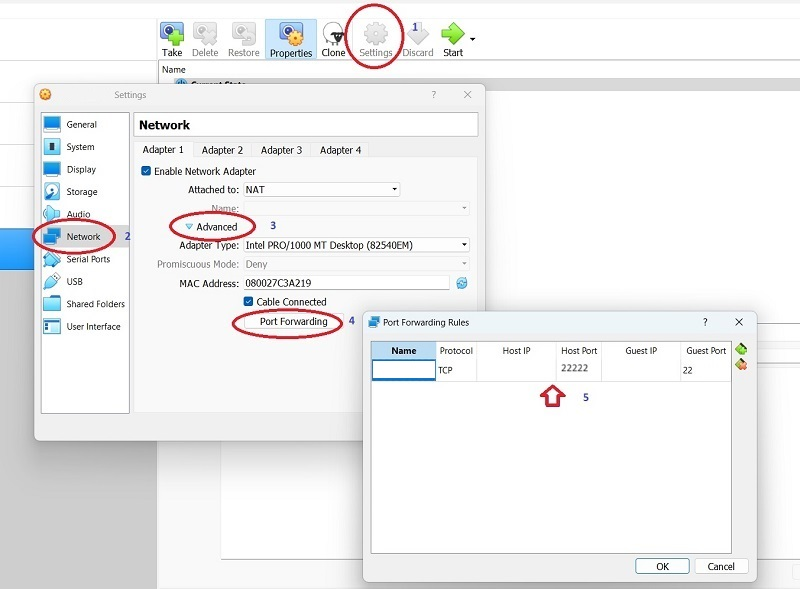
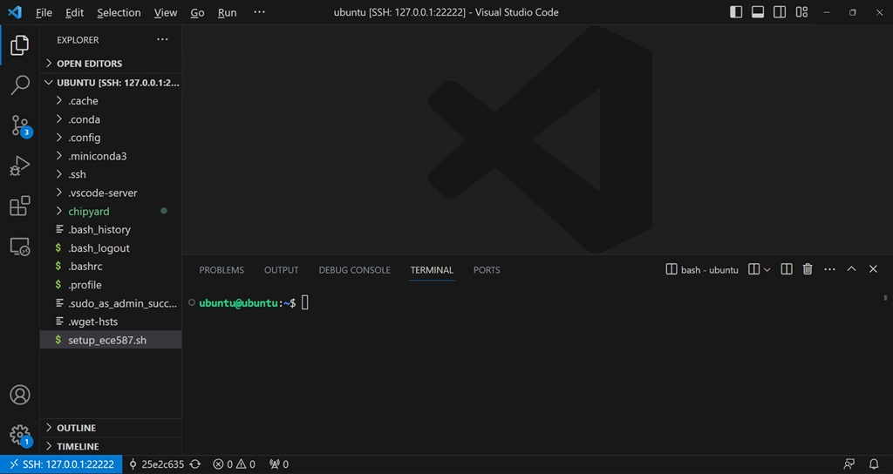

In this project, we will setup an environment for the open-source framework Chipyard with supporting libraries and tools. This will be used for other parts of our RISC-V prototyping projects. In addition, you may find it useful for your System Exploration project as well.
Since many libraries and tools used by Chipyard only run on x64 (Intel/AMD) processors, in II. Virtual Machine Setup we will introduce the recommended method that install our ECE 587 VM Appliance on a recent Windows computer with at least 4 CPU cores, 16GB memory, and 512GB SSD. If you are using ARM-based computers (Apple MacBooks, Raspberry Pi's, etc.) or your computers are more than 5 years old, please consider buying a new Windows computer as mentioned earlier. Alternatively, you may rent a x64 Ubuntu server from cloud providers and follow III. Ubuntu Server Setup, though we are not responsible for any cost incurred and we cannot provide support for any tech issues.
Install the most recent version of VirtualBox on your Windows computer. You will need to turn on hardware virtualization if you haven't done so already.
Download the VM Appliance IIT-ECE587.ova and double-click to install/import. Make sure the file is downloaded completely with the size of 10,049,267,200 bytes and verify the integrity if possible.
Choose the installed VM and click 'Settings'. Choose 'Network' and click 'Advanced' from 'Adapter 1'. Click 'Port Forwarding' to bring up 'Port Forwarding Rules'. You should be able to see an entry that maps 'Guest Port' 22 to 'Host Port' 22222. If not, you should setup the rule by yourself.

Start the VM. After a while, it would display the login screen. While you could login here, please proceed to IV. Access Chipyard via SSH in Visual Studio Code as that is much more convenient.
Alternatively, if you are familiar with linux server administration and cloud computing, you may use your own Ubuntu server or a Ubuntu server instance rented from a cloud provider. Please follow the instructions below but be advised that we are not responsible for any cost incurred and we cannot provide support for any tech issues. In addition, you will be required to use the VirtualBox VM above if issues persist.
ubuntu@ubuntu:~$ git clone https://github.com/wngjia/ece587 ... Unpacking objects: 100% (5/5), 839 bytes | 839.00 KiB/s, done. ubuntu@ubuntu:~$ ece587/setup_ece587.sh ... make[1]: Leaving directory '/home/ece587/chipyard/generators/gemmini/software/gemmini-rocc-tests/build/imagenet'It may take from 30 minutes to more than 1-hour to finish the provisioning. You can work on something else but please keep the instance running. You also need to make sure that the script completes successfully as above.
Accessing Chipyard that is installed to a VM on your own computer, or from a cloud instance, is not very different given you are using a proper set of tools.
Visual Studio Code (VS Code) is a code editor that can be extended into a powerful IDE by third-party extensions. Download VS Code and install as necessary. "Remote - SSH" is a widely used VS Code extension that makes it possible to perform development tasks on a Linux server using your favorite graphical user interface. You can follow this link to install it, or you can start VS Code and search for it in the Extensions panel from the left.
Click the green "><" button at the lower left corner to access remote window options in VS Code. Choose "Connect to Host..." and then enter "ubuntu@127.0.0.1:22222" for the virtual machine setup. A new VS Code window will open and asks you for the password. Once you type the password 'ubuntu', you will be connected to the server. For the Ubuntu server setup, you should instead use the actual IP address and port, as well as the correct username/password combination. You can now access files by opening a folder and execute commands by opening a terminal (... -> Terminal -> New Terminal). Sometimes you will need to type the password again.

You should go through "Basic Linux usage: Chapter 1 to 8" from Linux Tutorial if you are not familiar with Linux systems. In the terminal, commands can be pasted by a right-clicking and texts can be copied by selecting them.
Run the following commands in the terminal to make sure that everything works properly.
ubuntu@ubuntu:~$ source chipyard/env.sh (/home/ubuntu/chipyard/.conda-env) ubuntu@ubuntu:~$ cd chipyard/generators/gemmini (/home/ubuntu/chipyard/.conda-env) ubuntu@ubuntu:~/chipyard/generators/gemmini$ ./scripts/run-spike.sh template ... Input and output matrices are identical, as expected (/home/ubuntu/chipyard/.conda-env) ubuntu@ubuntu:~/chipyard/generators/gemmini$ ./scripts/run-verilator.sh template ... Input and output matrices are identical, as expected
Complete the tasks for Section IV (5 points) to confirm that the commands work. Take screenshots and include them in a 1-page project report in .doc/.docs or .pdf format, and submit it to Canvas before the deadline.